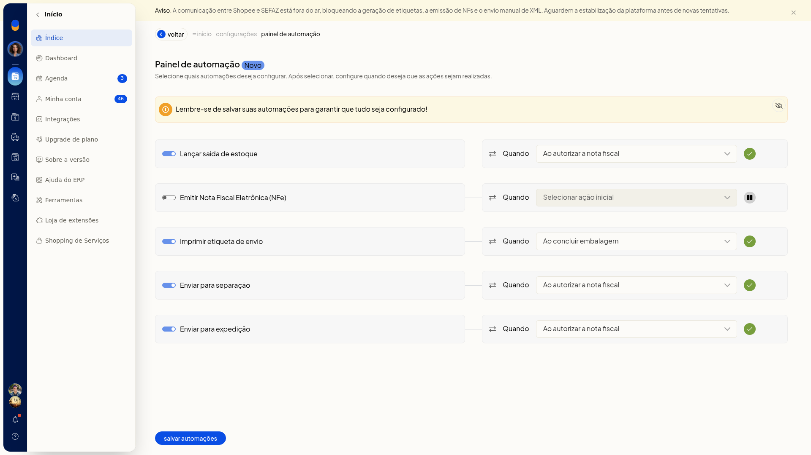
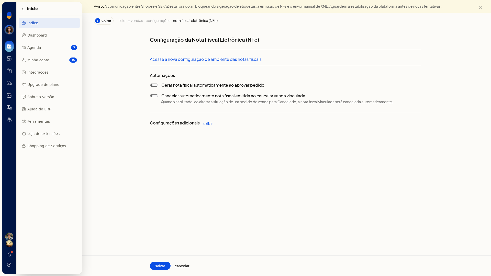

Automações do fluxo de vendas
No ERP da Olist, o Painel de automação define quais ações do fluxo de vendas o ERP executa e em que momento. Você liga ou desliga cada ação e escolhe o gatilho no campo Quando.
Há também duas automações de nota fiscal eletrônica, em outra tela: gerar a nota ao aprovar o pedido e cancelar a nota emitida quando o pedido de venda vinculado for marcado como Cancelado.
Importante
- No Painel de automação, a configuração só fica garantida depois de salvar.
- Os gatilhos não são os mesmos em todas as automações.
- Em Configurações adicionais, na configuração da NFe, aparecem parâmetros gerais da NFe e do DANFE, não outras automações do fluxo de vendas.
Instruções
Pelo Painel de Automações
- Acesse Vendas > Painel de Automações.
- Ligue ou desligue as automações que deseja usar. Nenhuma é obrigatória:
-
Lançar saída de estoque
-
Emitir Nota Fiscal Eletrônica (NFe)
-
Imprimir etiqueta de envio
-
Enviar para separação
-
Enviar para expedição

- No campo Quando de cada automação ligada, escolha o gatilho. Todos esses campos também têm a opção Selecionar ação inicial.
- Lançar saída de estoque: Ao autorizar a nota fiscal, Ao salvar a nota fiscal, Ao salvar o pedido ou Ao marcar pedido como enviado.
- Emitir Nota Fiscal Eletrônica (NFe): Ao aprovar o pedido.
- Imprimir etiqueta de envio: Ao concluir embalagem.
- Enviar para separação e Enviar para expedição: Ao autorizar a nota fiscal, Ao salvar a nota fiscal, Ao salvar o pedido ou Ao aprovar o pedido.
- Clique em Salvar automações. A tela indica quais ações devem ocorrer e em qual gatilho, e só garante a configuração depois desse clique.
Na configuração da nota fiscal eletrônica
-
Acesse Configurações > Configurações ERP.
-
Abra a aba Notas Fiscais e clique em Configuração da nota fiscal eletrônica (NFe).
-
Na seção Automações, ligue ou desligue Gerar nota fiscal automaticamente ao aprovar pedido.
-
Ligue ou desligue Cancelar automaticamente nota fiscal emitida ao cancelar venda vinculada. Com essa opção ligada, ao alterar a situação do pedido de venda para Cancelado, a nota fiscal vinculada é cancelada automaticamente. Essas duas automações ficam nesta tela, separadas da lista do Painel de automação.

Informações adicionais
A lista de automações é fixa
Não há formulário para incluir uma automação nova. Você só liga, desliga e define o gatilho das ações já exibidas no Painel de automação.